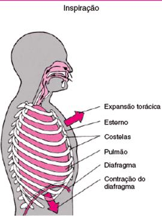
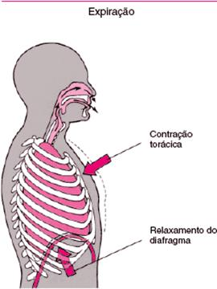

patologia respiratória do tipo restritivo.
O acto de respirar envolve 2 processos interligados, a ventilação e a respiração. Ventilação é o movimento do ar para dentro e para fora dos pulmões. Respiração refere-se às trocas de oxigénio e dióxido de carbono através das membranas celulares.
O ar entra pelas narinas e passa para a cavidade nasal onde é humidificado, aquecido e filtrado. Passa pela faringe, laringe e depois atinge as vias aéreas inferiores que são constituídas pela traqueia, brônquios, bronquíolos e as unidades respiratórias terminais. As trocas gasosas dão-se ao nível dos alvéolos. Esta circulação do ar inalado ocorre como resultado das alterações no gradiente de pressões entre a atmosfera e o alvéolo provocados pela mecânica muscular inspiratória e expiratória. O movimento do ar faz-se de uma zona de maior pressão para uma zona de menor pressão. O gradiente de pressão entre a atmosfera e a cavidade torácica é determinado pelas alterações no tamanho da cavidade torácica. Por isso, o gradiente de pressão entre o interior e exterior dos pulmões produz um aumento do volume torácico que resulta na expansão dos pulmões. O aumento do volume torácico é produzido por um conjunto de músculos que actuam na grelha costal, colectivamente com a designação de músculos inspiratórios.
A distensibilidade e elasticidade são duas propriedades que permitem aos pulmões expandirem-se e voltarem ao seu estado de repouso. A distensibilidade é uma qualidade de ceder à pressão e representa a facilidade com que os pulmões podem ser esticados para deixarem entrar um volume de ar. As determinantes desta propriedade são a recolha elástica do pulmão e da parede torácica e a tensão da superfície alveolar. A elasticidade da parede torácica é determinada pela musculatura. Esta propriedade é determinada pela recolha elástica e pelas fibras de colagénio dos pulmões.
A inspiração só é possível porque os pulmões se expandem, cedendo à pressão do ar a entrar – extensibilidade pulmonar. Na expiração, a expulsão do ar dos pulmões é o resultado da acção de duas forças: força de retracção elástica do parênquima pulmonar e a força produzida pela tensão superficial alveolar. Estas forças tendem a afastar os pulmões (folheto visceral) da caixa torácica (folheto parietal) e a produzir o colapso dos pulmões.

A inspiração é um fenómeno activo que requer a contracção de certos músculos. O diafragma é o principal músculo inspirador, sendo responsável pelas maiores variações nos diâmetros vertical, horizontal e ântero-posterior da caixa torácica, que tem lugar durante a inspiração. Na respiração eupneica distingue-se, ainda, a acção dos músculos escalenos e acessoriamente dos músculos intercostais externos. Estes músculos elevam as costelas produzindo o aumento do diâmetro transversal da caixa torácica.
Na inspiração forçada a acção do diafragma é potencializada por outros músculos inspiradores; o grande peitoral e o esternocleidomastoideu. Em conjunto, estes músculos elevam a grelha costal proporcionando um ponto fixo aos músculos intercostais externos.
Durante a inspiração, quando o diafragma se contrai, o encurtamento das fibras musculares diminui o comprimento do diafragma aposicionado, havendo uma descida da abóbada diafragmática. O deslocamento axial da abóbada desloca o conteúdo abdominal caudalmente, aumentando a pressão intra-abdominal. Este aumento da pressão abdominal actua como um estabilizador para o tendão central descendente. Então, o encurtamento continuado das fibras costais gera uma tracção superior sobre as costelas inferiores, resultando um movimento para cima e para fora (secundariamente ao fenómeno de alça de balde) da grade costal inferior.

A expiração durante a respiração em repouso é um fenómeno passivo, com a retracção dos componentes elásticos dos pulmões e parede torácica.
Na expiração forçada, a acção das forças de retracção do pulmão são potencializadas pela a intervenção dos músculos torácicos (intercostais internos) e abdominais (parede antero-lateral do abdómen), colectivamente designados músculos expiratórios, reduzindo o volume da caixa torácica.